Apprentices and Emrys’s Echo use the newest concept art. Wisps, Shadow Hounds, and Stone Sentinels remain exactly as you approved. Open the one-page overview.
Preserved favorite
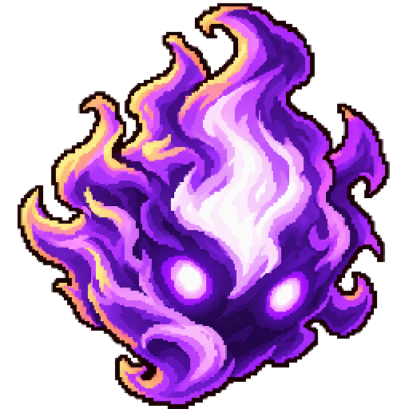
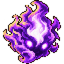
Angular, mischievous face
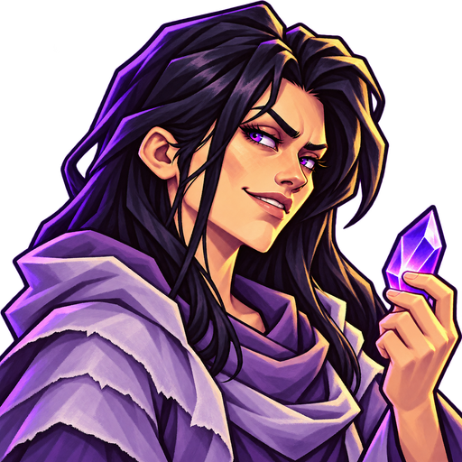
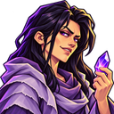
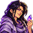
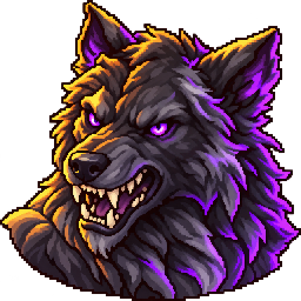
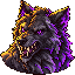
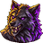
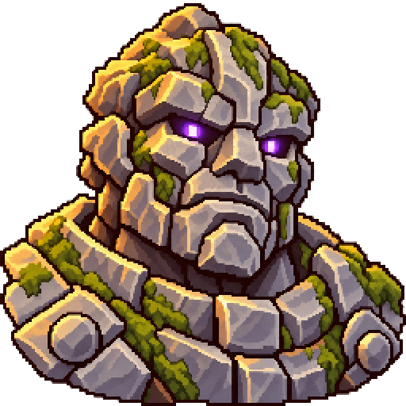
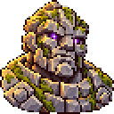
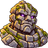
Latest concept
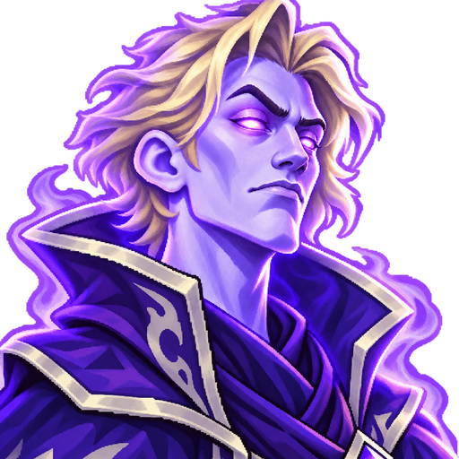
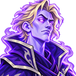